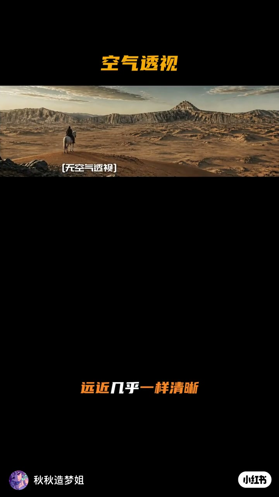
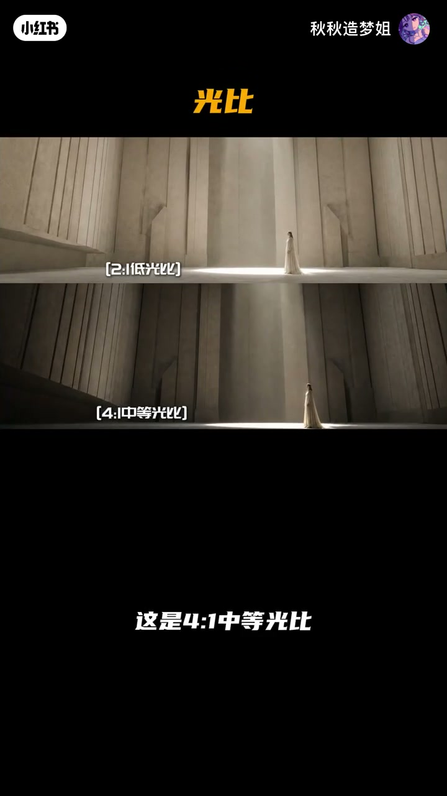
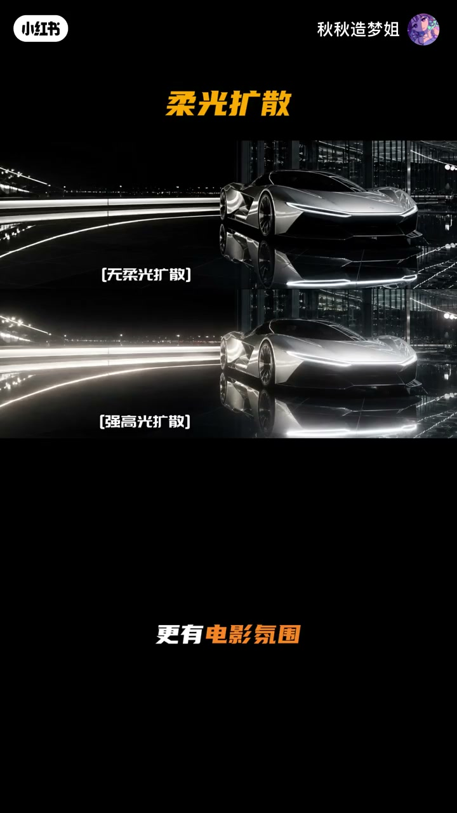
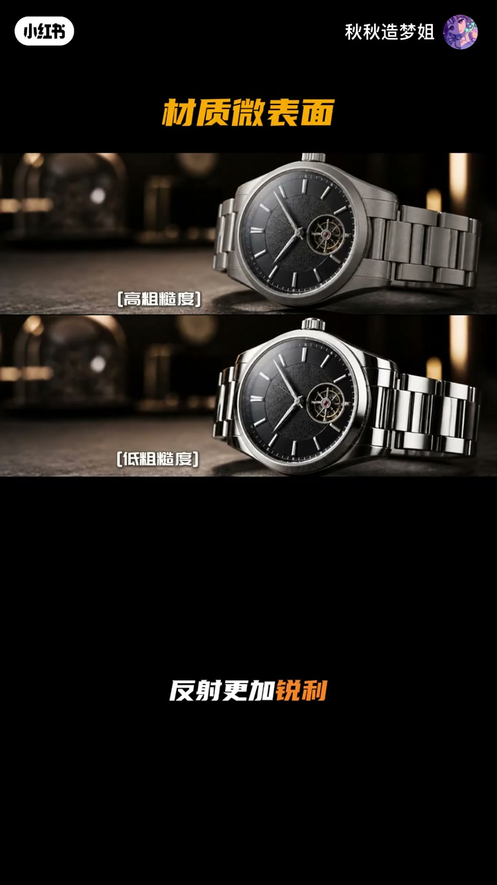

内容要点
秋秋造梦姐用对照卡在约 50 秒内扫过一组可写入提示词的「高级质感」参数：空气透视、光比、柔光／高光扩散、黑位、粗糙度与各向异性。meta 标题为空，内容以画面标签与口播为准——每一组都给「无／弱／强」或档位差异，方便直接抄进 prompt。
知识结构
无：远近一样清晰显扁平；自然：越远对比度越低更真实；强：远景层次丰富、史诗电影感。
2:1 阴影柔、画面干净；4:1 层次自然、电影常见；8:1 反差强、戏剧与压迫感升。
无：锐利偏数字摄影；强高光扩散：更柔、更电影；轻度：保留细节又更高级。
压黑／标准／抬升黑位对应力量、真实、胶片灰；高／低粗糙度＝磨砂／镜面；各向异性＝拉丝金属高光。
这组参数的用法是「对照选档」：先定空间（空气透视）、光比与扩散，再定黑位与微表面。把画面标签原词写进提示词，比空喊「更电影感」更可控。
00:00-00:10空气透视三档：扁平 → 真实 → 史诗
开场沙漠骑马远景卡：无空气透视时远近几乎一样清晰，画面易扁平。自然空气透视让距离越远对比度越低（ASR「位比度」按语境校正），空间更真实。强空气透视则远景层次更丰富，更有史诗电影感。
00:02 黄字标题「空气透视」+「[无空气透视]」标签，是后续各组「有无对照」的同一版式。

00:10-00:20光比：2:1 / 4:1 / 8:1
同一石廊人像用光比分档：2:1 低光比阴影更柔、画面更干净；4:1 中等光比层次自然，口播称是电影里最常见的光比；8:1 高光比明暗反差更强，戏剧感与压迫感明显提升。
00:14 上下对照直接标出「[2:1低光比]」与「[4:1中等光比]」，方便截图进素材库。

00:20-00:29柔光／高光扩散：锐利数字感 vs 电影晕光
夜景超跑对照：无柔光扩散时画面锐利、偏数字摄影感；强高光扩散（画面原词）让灯光更柔、更有电影氛围；轻度柔光扩散则在保留细节的同时让画面更高级。
00:25 标题「柔光扩散」下，「[无柔光扩散]」与「[强高光扩散]」并置，bloom 差异一目了然。

00:29-00:46黑位三档 + 粗糙度 + 各向异性
黑位：压黑使暗部更深、更有力量感；标准黑位层次自然、最接近真实摄影；抬升黑位暗部偏灰、更有复古胶片质感。材质微表面：高粗糙度像磨砂、反射柔和；低粗糙度像镜面、反射锐利。
收尾各向异性（ASR「各项异性」）：高光沿纹理拉伸，呈现高级拉丝金属质感。00:42 腕表高／低粗糙度对照是本组最清晰的微表面证据。

完整转录（35段）
以下文本由 Whisper medium 模型自动转录，可能存在少量识别误差，已尽可能修正。
这是无空气透视
远近几乎一样清晰
画面容易显得扁平
这是自然空气透视
距离越远 位比度越低
空间更加真实
这是强空气透视
远景层次更丰富
画面更有史诗电影感
这是2比1低光比
阴影更柔和 画面更加干净
这是4比1中等光比
层次自然 也是电影里最常见的光比
这是8比1高光比
明暗反差更强
戏剧感和压迫感都会明显提升
这是无柔光扩散
画面锐利 更有数字摄影感
这是强高光扩散
灯光更柔和 更有电影氛围
这是轻度柔光扩散
保留细节的同时 让画面更高级
这是压黑黑位
暗部更深 画面更有力量感
这是标准黑位
层次自然 最接近真实摄影
这是抬升黑位
暗部偏灰 更有复古胶片质感
这是高粗糙度
基础更像磨砂 反射更加柔和
这是低粗糙度
基础更像镜面 反射更加锐利
这是各项异性
高光会沿着纹理拉伸
呈现高级拉丝金属质感